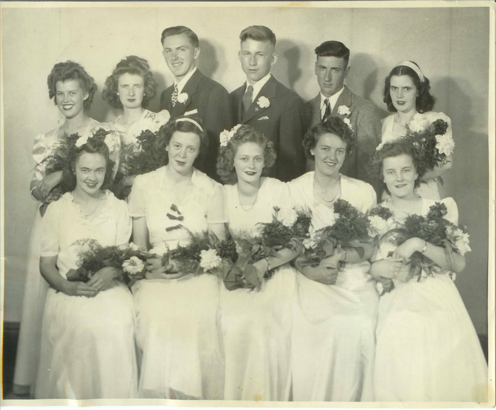

The Family Chronicle
No. 90 Janary 15, 2005

MRHS Graduating Class of 1946: Front Row: Helen MacNaughton, Flora Kingston. Helen MacRae, Ellen MacLenaghan and Kathleen MacRae. Back Row: Mary Johnston, Vera Cameron, Robert Dutcher, Don Glendenning, Bill Gregan and Norma Williston, (Ed: This has to be the finest looking group of all)
Donald Edge wrote:
“I too like the dumpcart, but my favorite was the hayrake
In all the heat and sweat and flies and boredom of haying, there was one light moment. When the fields were cleared of hay,
I got to ride the hay rake to glean any remaining hay. It was light work and it took place in the cool of the early evening, and the gray horse, free from the heavy harness and the hay wagon, went at a quick pace as we went up and down and around the fields, very occasionally stopping while I pulled the long handle to raise the rake and release the hay. It was one of the highlights of my boyhood in Black River.”
I have an undated press clipping which reads as follows:
“The death of Mrs. Christina MacKenzie, wife of the late John MacKenzie, a well-known resident of Loggieville, occurred at Mount St. Joseph's Pavilion here at an early hour Friday morning.
The late Mrs. MacKenzie was the former Christina Watling of Black River and was eighty years of age. She was twice married, her first husband being Thomas Adams of Black River.
Surviving from her first marriage are two sons, James Adams and Willard Adams both of Chippewa, Ontario. Surviving from her second marriage are two daughters, Mrs. F. Schickle, Mandarin, Florida and Miss Jean MacKenzie, Chippewa, Ontario. Two sisters and three brothers also survive. They are Mrs. John R. Godfrey, Black River Bridge, and Mrs. Elmer Glendenning, Black River; James A Watling, Black River, George A. Watling, New Hampshire, and D. Ernest Watling, Loggieville.
The funeral was held on Sunday afternoon from the home of Ernest Watling, Loggieville. A short service at the house was followed by a public service at Knox United Church. Interment was made in the Pine Grove Cemetery.”
Our early morning CBC radio show of January 9, 2005, in response to a request, played a song about the preacher and the bear. In 1937 Ken stayed the winter in with Venetia in Point
Aux Carr while Cam was fishing smelts. Cam and Netia had an old gramophone, which took cylindrical records; one record told the story of the Preacher and The Bear. We must have driven Venetia crazy playing and replaying it. I haven’t heard it since but was reminded of it this morning. Here are a few lines from the song as best I remember:
“A preacher went out a’ hunting
“Twas on a Sunday morn.
Of course, ‘twas against his religion
But he took his gun along
He shot himself a very fine …
And one big ……hare
But on his way returning home
Met a great big grizzly bear.
He walked to the coon you see
The coon got so excited
It climbed a persimmon tree
The bear sat down in the middle of the road
And the coon climbed out on a limb.
And he cast his eyes to the Lord in the skies
And these words said to him
O Lord who delivered Jonah
From the belly of the whale, and then
The Hebrew children from the fiery furnace
So the good book doth declare.
Oh Lord, if you can’t help me
I know there were additional verses but I cannot recall the words.
The Chronicle is an occasional newsletter published by Don Glendenning and posted on the family website. It is intended to share information about my family, community and the times in which I grew up. While every effort is made to be accurate, errors are likely to occur. Comments, enquiries and information may be sent to 62 Queen Elizabeth Drive, Charlottetown, PEI, C1A 3A9. Tel:902 892 5859. Email: dglende@auracom.com Web: www.glendenning.net